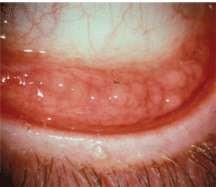

Conjunctiva · Bacterial conjunctivitis
Inclusion conjunctivitis (Inclusion Blenorrhoea)
Etiology
- The causative organism:
- Chlamydia oculogenitalis (Sero types D.E.F).
- Mode of transmission:
- Auto infection by the fingers forms the genitalia of young adults having chlamydial urethritis or cervicitis.
- Spreading through swimming pools (swimming pool conjunctivitis).
- Sexual transmission.
- During labor from mother to neonate.
Treatment
- Similar to medical treatment of trachoma.
Clinical Picture
- Symptoms: hyperemia and mucopurulent discharge.
- Signs:
- Conjunctiva: shows large follicles, mainly lower palpebral. (Fig. 49)
- Cornea: show superficial keratitis but no pannus.
- Preauricular lymphadenopathy.
N.B: Preauricular lymphadenopathy
Occurs in:
- Acute inclusion conjunctivitis.
- Adenoviral infection.
- Acute trachoma.
- Parinaud syndrome.
